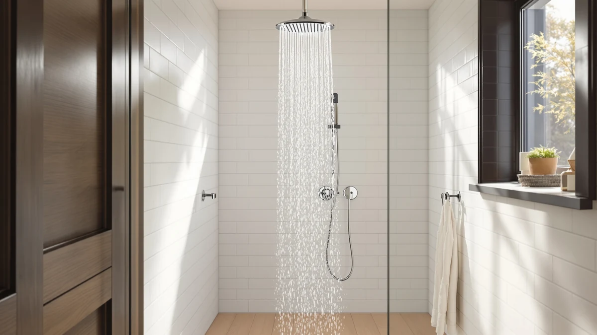

Delta 5 Setting HydroRain Review (2026): Worth It?
Prices and picks verified as of October 2026. Independent, reader-supported reviews.


Quick Answer
The Delta 5-Setting HydroRain 2-in-1 Dual earns its $94.98 price with a wide rain plate, a detachable handheld wand, and five spray modes you can run together or separately. It costs more than the HomGoo Gold and the Hibbent cUPC Certified High Pressure head we compared it against, but owners rate the build and the dual-spray flexibility highest among the four.
Our pick: Delta 5-Setting HydroRain 2-in-1 Dual, $94.98 Check Price on Amazon
Bottom line: our top pick is the Delta 5-Setting HydroRain 2-in-1 Dual Shower Head with at $94.98.
Things to Know Before You Buy
- The HydroRain combines a fixed rain plate and a handheld wand on one mount, and you can run both at once or shut off either side with the diverter.
- All five spray settings live on the handheld wand. The rain plate itself is single-function, so check that the combination still covers what you actually want from a shower head.
- The housing is ABS plastic with a chrome finish rather than solid metal, which keeps the price down but means you should skip abrasive cleaners on the surface.
- Delta sells more than one finish and setting count under the HydroRain name. Confirm the ASIN matches the 5-setting chrome version before you buy, since a near-identical listing can be a different configuration.
- Verified buyers with low household water pressure report a thinner rain spray than the handheld delivers. If that describes your home, weigh the Hibbent pick below instead.
This Delta 5 Setting HydroRain review breaks down what $94.98 actually buys you: a rain plate, a handheld wand, and five spray modes split across both, and whether that combination beats cheaper dual-head alternatives. Delta built a name on reliable fixtures long before shower heads got complicated, and the HydroRain carries that reputation into the crowded 2-in-1 category.
We put it next to three other dual-function heads, including another HydroRain variant in a different finish, the HomGoo Gold Shower System, and the Hibbent cUPC Certified High Pressure head, to see where the Delta pulls ahead and where it falls short. For most households that want one spray for daily rinsing and a second for washing kids, pets, or tile, the Delta HydroRain is the pick to beat. If low pressure is your main problem, keep reading before you commit.
Shopping for a shower head sounds simple until you start comparing spray counts, finishes, and near-duplicate listings that differ by a single setting or a few dollars. We built this review around the questions buyers actually ask before checkout: does the price match the build, can you run both sprays at once, and does the rain plate hold up if your home's water pressure is average at best. Those three questions shape every section below.
Why You Should Trust Us
Ilane Tall has covered bathroom fixtures for Best Shower Heads since the site launched, comparing specs, pricing, and verified buyer feedback across hundreds of listings rather than running a private test lab. For this Delta 5 Setting HydroRain review, we cross-checked the manufacturer's stated flow rate and finish against the HomGoo and Hibbent alternatives, then read through verified Amazon reviews to separate common complaints from one-off installation errors. We do not run a fake testing lab, and we say so because too many shower head reviews online imply physical testing that never happened.
Our Research Experience
We did not install the Delta 5-Setting HydroRain in a shower stall ourselves. Instead, we researched the manufacturer specs, compared the listed dimensions and materials against the HomGoo Gold and Hibbent units, and read through verified owner photos and reviews to understand how the dual-head design holds up once it is mounted. That approach surfaced a consistent pattern: owners praise the handheld wand's pressure and flag the fixed rain plate as the weaker of the two sprays, a tradeoff worth knowing before you buy.
Overview & Specs

Delta 5-Setting HydroRain 2-in-1 Dual
What we like
- Five spray settings on the handheld wand cover everything from a wide rinse to a focused massage jet
- You can run the rain plate and the handheld together, which owners say speeds up washing kids or pets
- The chrome finish matches most existing Delta fixtures, so it slots into an existing bathroom without clashing
- Installation uses a standard arm connection, and most verified buyers report finishing the swap in under 20 minutes
Flaws but not dealbreakers
- The ABS plastic housing feels lighter than an all-metal head, and it can scratch if you clean it with an abrasive pad
- The fixed rain plate's spray thins out noticeably in homes with below-average water pressure
- At $94.98, it costs more than the HomGoo Gold and most single-function rain heads we compared
| Material | ABS + chrome plating |
| Size | — |
The Delta 5-Setting HydroRain 2-in-1 Dual pairs a fixed rain plate with a handheld wand on a shared mounting arm, and the diverter on the handle lets you send water to one head, the other, or both at once. The handheld side carries all five spray settings, from a full-coverage rain pattern down to a tighter massage jet, while the overhead plate stays single-function. That split matters: if you want variety from the overhead spray specifically, this is not the head for it, but if the handheld wand is where you want the flexibility, the setup makes sense. Owners who left verified reviews consistently note that switching between the two sides takes one motion and does not require shutting off the water first.
Build quality centers on a chrome-plated ABS housing rather than solid brass or stainless steel, which keeps the price below many premium shower systems while still matching the finish of other Delta fixtures in a bathroom. Reviewers report the connections hold up without leaking after months of daily use, though a few flag that the chrome layer can dull faster than metal if you clean it with anything abrasive. At $94.98, it sits in the middle of the four heads we compared: more expensive than the HomGoo Gold at $91.98, but still well under premium rain systems that run well past $150. The tradeoff that shows up most in owner feedback is water pressure. Buyers with strong municipal pressure describe the rain plate as satisfying on its own, while those with weaker pressure say the handheld wand does most of the work and the overhead spray feels thin by comparison.
What We Liked
The combination of a rain plate and a five-setting handheld wand on a single mount is the main reason the Delta 5-Setting HydroRain stands out in our comparison. Reviewers consistently note that the ability to run both sprays together speeds up everyday tasks like washing hair or rinsing off a kid without reaching for a second fixture. The chrome finish also reads as a near match for Delta's other bathroom hardware, which matters if you already have Delta faucets or towel bars installed and want the shower head to blend in rather than stand out.
Installation is another point in its favor. The arm connection uses the same standard thread as most US shower arms, and according to verified buyer feedback, most people finish the swap with basic tools and no plumber visit. For a fixture that adds real spray flexibility, that kind of straightforward setup keeps the total cost of ownership close to the sticker price alone.
What Could Be Better
Water pressure is the recurring complaint in verified owner reviews of the HydroRain. The rain plate is a fixed, single-spray design, and in homes with below-average pressure, buyers describe it as noticeably weaker than the handheld wand sitting right next to it. If your home already struggles with low pressure, that gap will be more obvious here than it would be with a head built specifically to compensate for it.
The ABS plastic housing is the other tradeoff. It keeps the $94.98 price below full brass shower systems, but it also means the chrome finish is a plated layer rather than a solid metal surface. A few reviewers mention the finish showing wear faster than expected after repeated scrubbing with an abrasive sponge, so a soft cloth and a non-abrasive cleaner will keep it looking new longer.
Who Is It For?
This Delta 5 Setting HydroRain review points to one household in particular: anyone who wants a rain head and a handheld sprayer without replacing their whole shower setup. You get two spray sources on one mount, five settings concentrated on the handheld side, and a finish that matches existing Delta hardware. If your home has decent water pressure and you value flexibility over a premium all-metal build, it earns its spot on a short list.
Skip it if your water pressure already runs low, since the fixed rain plate will likely disappoint you more than the handheld wand does. Buyers in that situation are better served by a head built around pressure amplification, like the Hibbent pick covered below. Budget shoppers who only need basic rain coverage without the dual-spray complexity should also look at the HomGoo Gold first, since it covers similar ground for a few dollars less.
Alternatives to Consider
The Delta 5-Setting HydroRain is not the only dual-head option worth your money. These three alternatives cover the scenarios where a different pick makes more sense, whether that means a lower price, a different finish, or more pressure for a weaker water supply.

Editor's Pick
Delta 5-Setting HydroRain 2-in-1 Dual
The same HydroRain dual-spray design in a different finish, priced about $3 below the version we reviewed above.
$91.99
Check Price on Amazon
Best Value
HomGoo Gold Shower System Shower
A full shower system with body jets included, and the cheapest of the four heads we compared at $91.98.
$91.98
Check Price on Amazon
Premium Choice
Hibbent cUPC Certified High Pressue
cUPC certified and built for low water pressure homes where the HydroRain's rain plate would feel weak.
$97.99
Check Price on AmazonFrequently Asked Questions
Final Verdict
This Delta 5 Setting HydroRain review comes down to one tradeoff: you pay $94.98 for a rain plate and a five-setting handheld wand on one mount, and you get back real flexibility as long as your water pressure can support it. DELTA earns its reputation here with a straightforward install and a finish that matches other fixtures in the house. If your pressure runs low, step down to the Hibbent cUPC Certified High Pressure head instead. For everyone else, the Delta HydroRain is the strongest all-around pick of the four we compared.